1
인터뷰
/edu-grill-me
- AI가 한 번에 질문 1개
- 추천 답안 + 선택지 2~3개
- 코드로 알 수 있는 건 안 물음
- 결정을
decisions/에 저장
질문 → 계획 → 실행. 에이전트 워크플로로 6일 만에 완성한 풀스택 게임
2026-11-01 ~ 11-06
Git 커밋
줄의 TypeScript
자동 테스트 전부 통과
설계 결정 문서
실행 계획서
작업 지시서(Task)
몬스터 + 보스, 무기 3종
폰을 모니터에 겨누고 쏟아지는 맥주 캔 몬스터를 부수는 체감형 슈팅 게임.
실사 펍 배경, 3D 맥주 모델, 네온 라인
자이로·가속도 센서, 터치 방아쇠
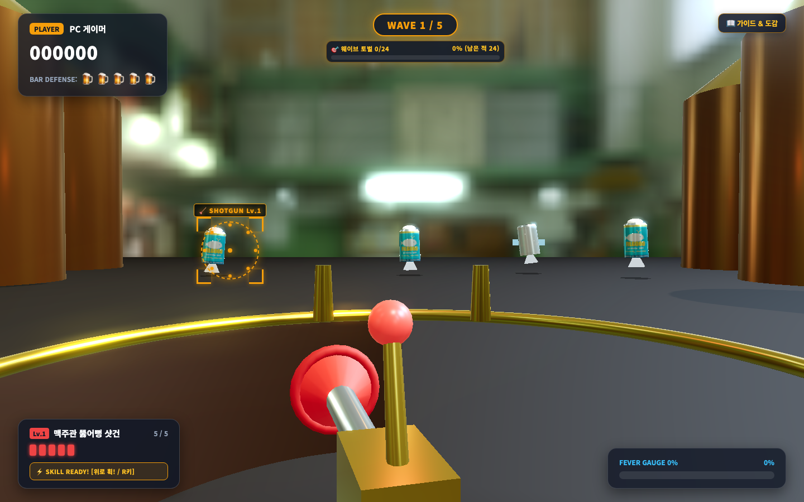
2대의 터미널, 2줄의 명령 npm run server · npm run dev → PC에서 QR을 띄우고, 폰으로 스캔하면 연결 끝.
구현 전에 AI가 끈질기게 물어보게 하고, 결정을 파일로 남긴다
decisions/에 저장current.md 포인터가 가리키는 Task 1개사람은 결정과 검수, 구현과 검증 반복은 에이전트. 컨텍스트는 대화가 아니라 파일에 남긴다.
질문마다 추천 답안과 선택지가 붙어, 설계 분기를 빠르게 확정할 수 있습니다.
모든 결정에 출처 꼬리표가 붙습니다.
Rejected 항목에 이유까지 남겨 같은 논쟁을 반복하지 않습니다.
.memory/ ├─ current.md ← 지금 할 일 포인터 ├─ decisions/ 43개 결정 문서 ├─ plans/ 39개 로드맵 └─ phases/ └─ 2026-11-05-score-differentiation/ ├─ P01-wave-time-bonus/ ├─ P02-boss-pressure/ │ └─ T01-summon-acceleration.md └─ P03-tune-and-verify/
summonAccel: {…})176개 Task가 이렇게 쪼개져 하나씩 완료 처리되었습니다.
테스트가 통과할 때까지 Task는 done이 되지 않고 포인터도 움직이지 않습니다.
세션이 끊겨도 current.md만 읽으면 어디서든 이어집니다. 새 대화에서도 문맥 유지.
실제 사례: 플레이 후 "빈 노란 띠가 상자처럼 보여요" → 결정 문서 → 수정 커밋으로 이어짐
조작감 · 무기 · 몬스터 · 웨이브 · 보상 카드 · 점수
명중 오차에 따라 4단계 판정, 데미지 배율이 달라집니다.
PERFECT = 오차 25% 이내, GREAT = 55% 이내, GOOD = 100% 이내
게임 시작 전 폰을 화면 중앙에 겨누고 버튼 한 번. 센서 오차를 보정.
손목을 위로 튕기면 무기별 필살기 발동. 쿨다운 21→14초.
게이지 100% 시 4초간 무제한 탄창, 점수 ×1.5.
꾹 누른 연사는 피해 감소. 한 발씩 노려 쏘게 유도.
Lv.1 펠릿 3발 → MAX 6발(총 4.32). 스킬 사방 뚫어뻥 폭풍: 8방향에서 날아와 몬스터를 기절시킴.
Lv.4에서 2마리 관통, 데미지 2.20. 스킬 오프너 참격: 부채꼴 칼날 3→7개가 필드 끝까지 날아감.
초당 9.5발 → 17.2발. 스킬 거품 해일: 필드 전체를 밀어내고 둔화. 단, 점수 배율은 가장 낮음.
축별 Lv.4 최댓값=100 · 샷건 초당 화력은 전 펠릿 명중 가정
레벨별 발당 피해량
넓은 범위, 한 방의 화력
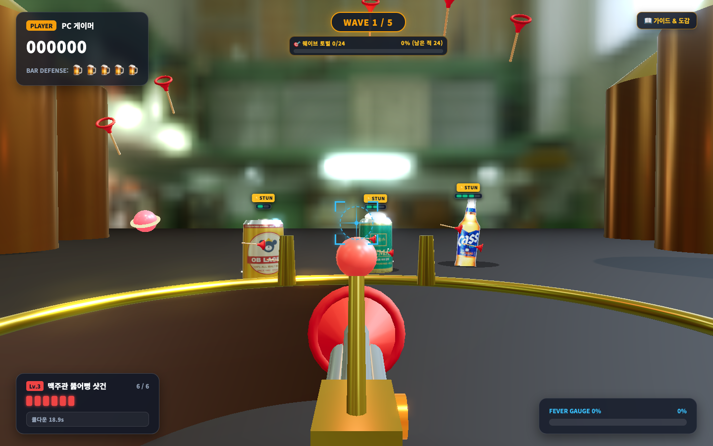
초정밀 일직선 관통
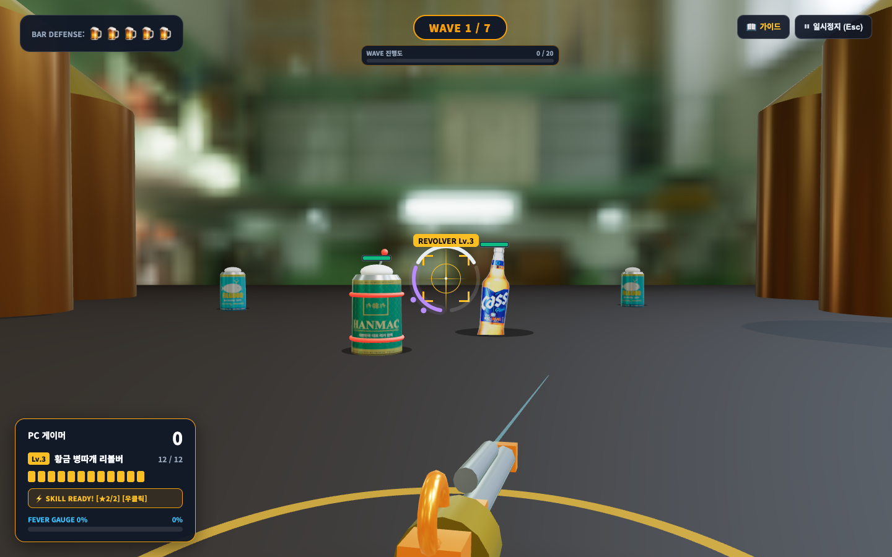
초고속 탄산 기포 난사
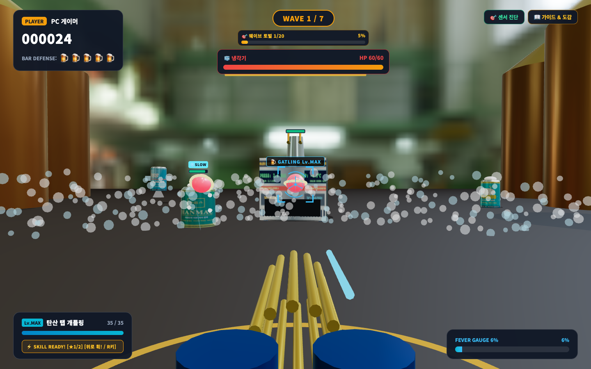
땅을 굴러오다 12m 안에서 1.4배 가속. 멀리서 미리 저격.
유일한 비행 몬스터. 좌우로 크게 흔들려 방향 전환 순간을 노려야 함.
방패병. 0.8초 올리고 2.4초 내림. 스킬만 방패를 뚫음.
폭탄 캔. 터지면 반경 4m에 피해 2. 뭉쳤을 때 노려 연쇄 폭발.
분열 탱커. 깨지면 작고 빠른 병 2마리로 분열.
좌우 이동, 체력 구간마다 부하 소환. 각종 방해 면역.
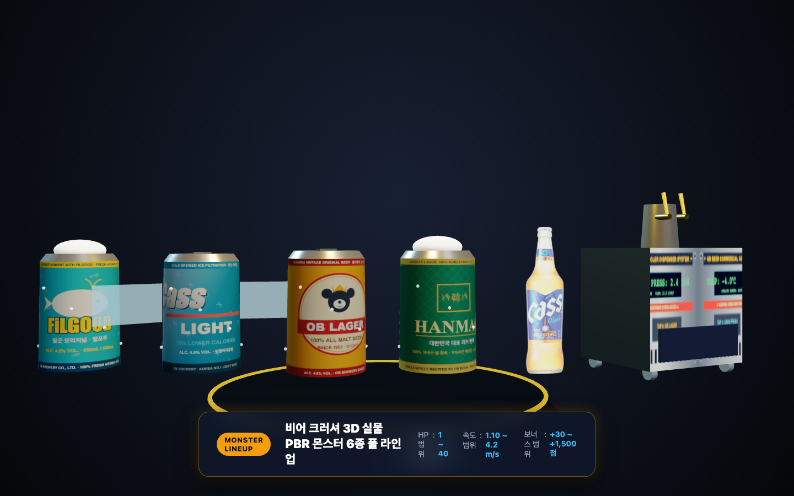
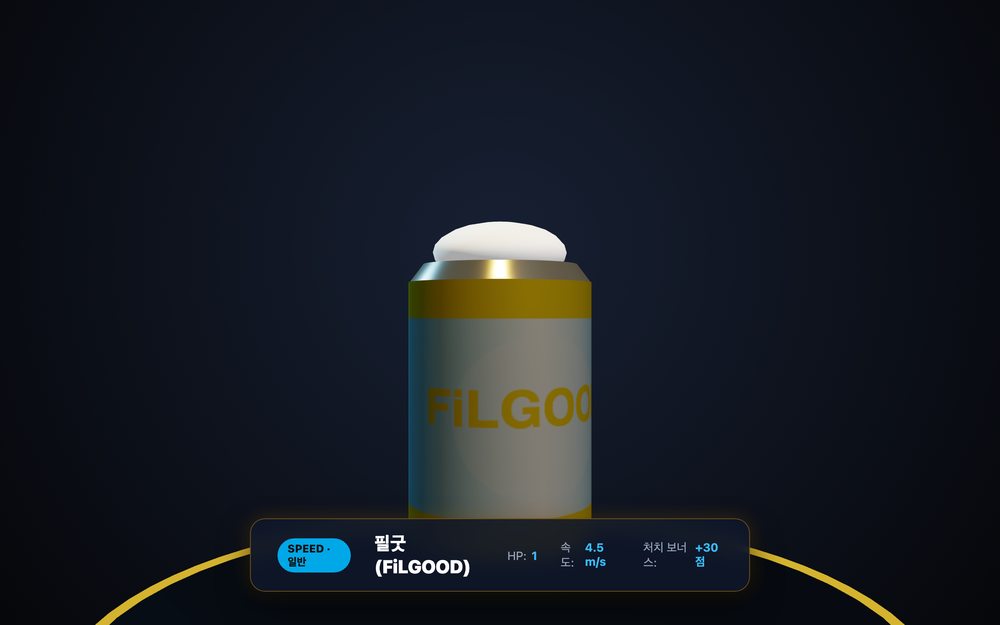
땅을 굴러오다 방어선 12m 안에서 속도 ×1.4로 쇄도. 체력이 1이라 가까워지기 전에 처리해야 하는 시간 압박형.
외형: 시안 블루 알루미늄 캔, 고래 일러스트 라벨, 뒤쪽 탄산 제트 분사구, 상단 크림 거품. · 지상 0.55m · 히트 반경 0.85m
공략 멀리서 미리 저격 · 샷건의 넓은 판정이 유리
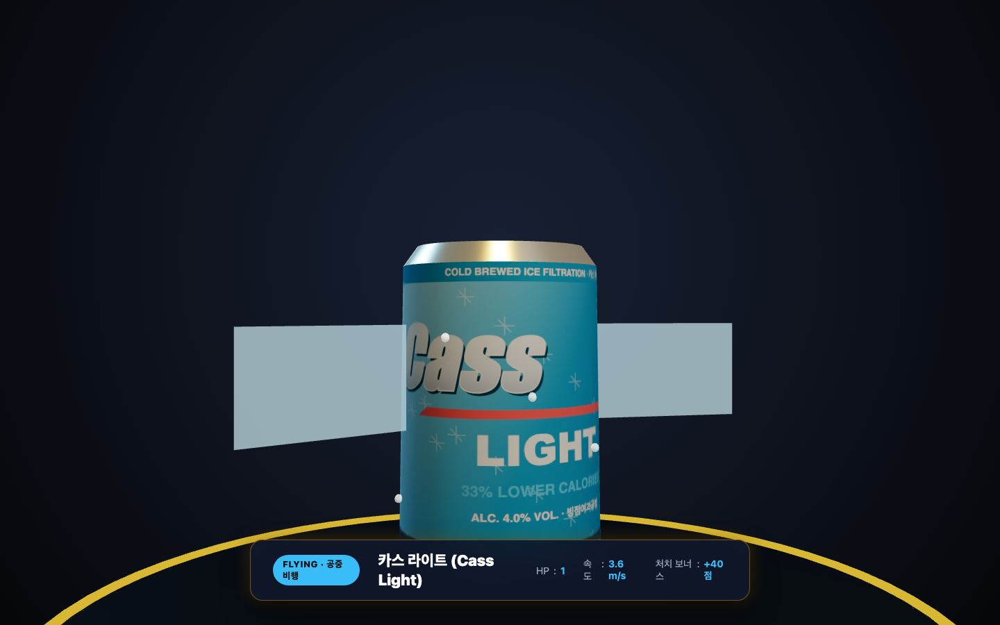
유일한 비행 몬스터. 날개를 퍼덕이며 좌우로 크게 흔들리는 회피 비행. 조준 높이를 달리해야 함.
외형: 아이스 실버/블루 메탈릭 캔, 카스 쉐브론 로고, 양옆 반투명 시안 날개. · 공중 1.45m · 히트 반경 0.90m
공략 흔들림 가장자리에서 방향을 바꾸는 순간을 노려라
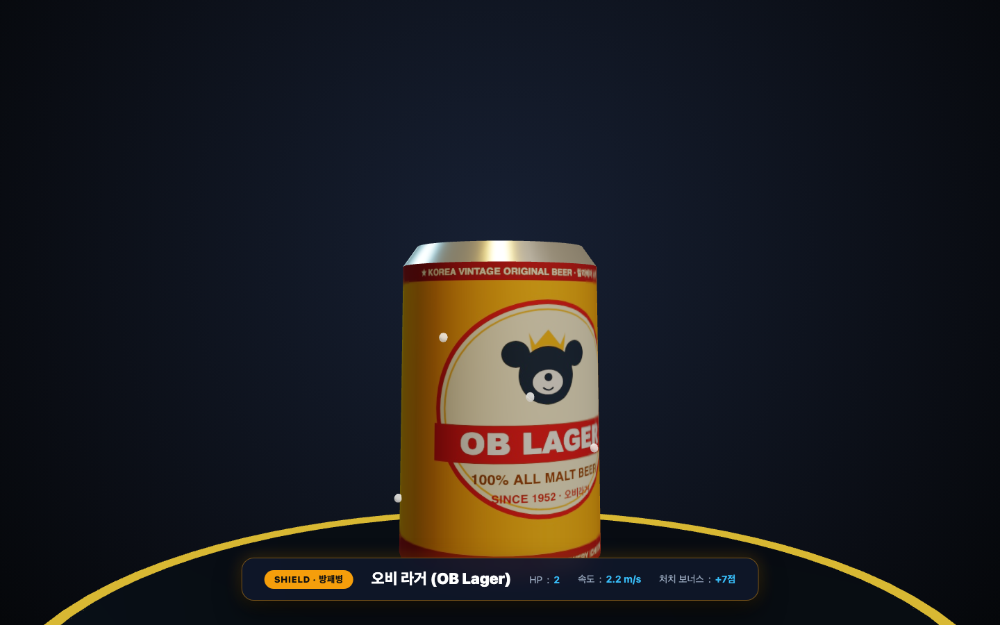
방패를 0.8초 들고 2.4초 내리기 반복(개체마다 시작 타이밍 다름). 방패 중엔 탄이 튕겨 점수·피버 없이 탄약만 소모. 액티브 스킬만 방패를 뚫음.
외형: 앰버 골드 캔, 왕관 쓴 오비 랄라베어, 1952 클래식 레드 리본, 푸른 방패 판. · 지상 0.55m · 히트 반경 0.95m
공략 방패가 내려간 순간에 쏴라 · 피버 사격도 막힘
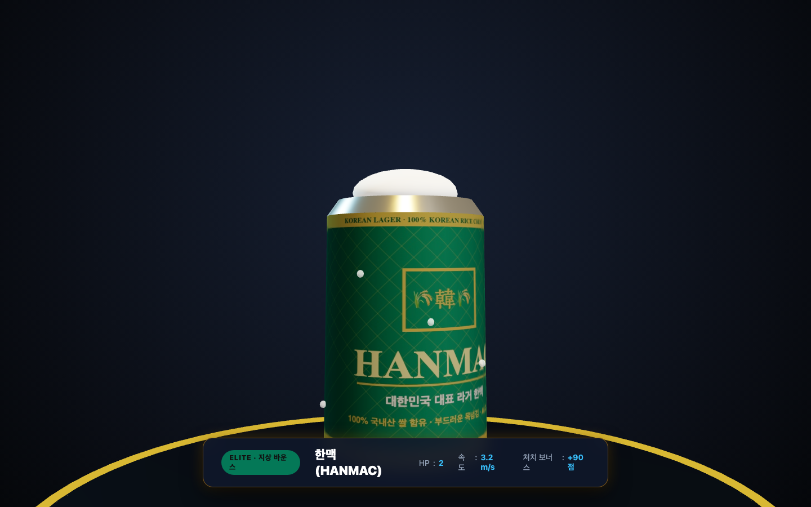
3HP 엘리트. 처치되면 폭발해 반경 4m 몬스터에게 피해 2(보스 제외). 폭발로 죽은 한맥도 연쇄 폭발.
외형: 딥 에메랄드 그린 PBR 캔, 황금 벼 이삭 크레스트, 韓 모노그램, 빨간 경고 띠와 불붙은 심지. · 지상 0.55m · 히트 반경 0.95m
공략 몬스터가 뭉쳤을 때 터뜨려 연쇄 · 놓치면 체력 감소
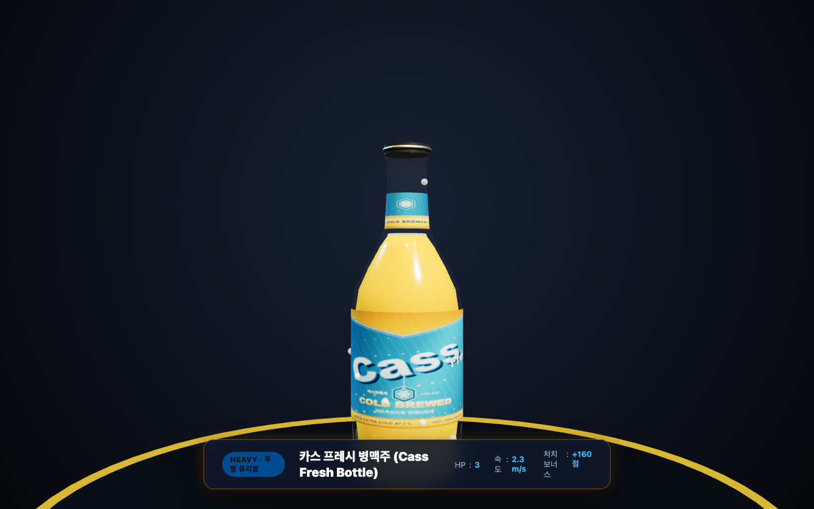
4HP 탱커. 깨지면 작은 병 2마리(HP 1, 2.2 m/s)로 양옆 분열. 작은 병은 다시 나뉘지 않지만 웨이브 종료 전에 모두 처치해야 함.
외형: 정품 500ml 투명병 실사 PNG 빌보드, 은색 크라운 캡, V-컷 CASS FRESH 블루 라벨. · 지상 0.55m (모델 1.2배) · 히트 반경 1.35m
공략 큰 병 → 작은 병 순서로 정리 · 유리 파편 이펙트
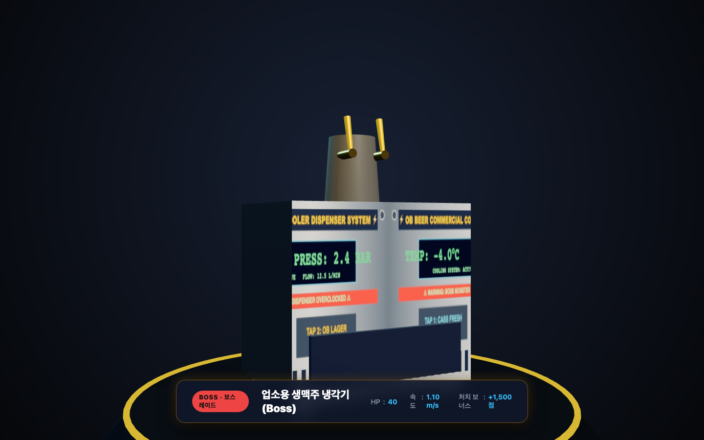
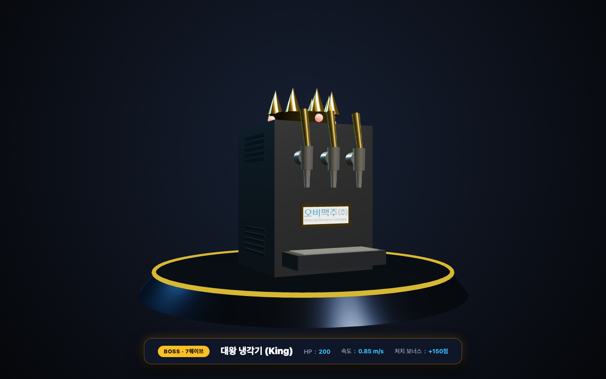
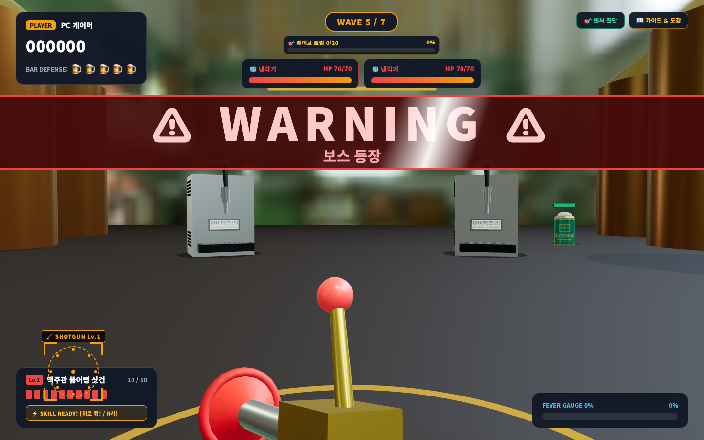
| 웨이브 | 구성 | 체력 |
|---|---|---|
| 3 | 냉각기 1대 | 75 |
| 5 | 냉각기 2대 | 각 70 |
| 7 | 냉각기 2대 + 대왕 | 각 90 / 200 |
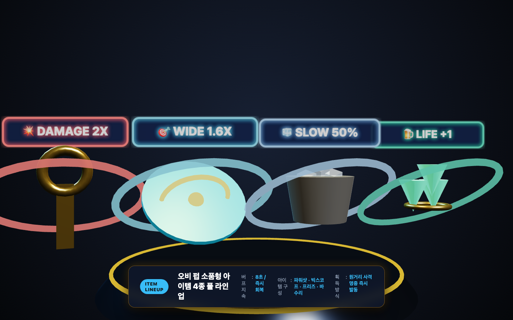
황금 병따개 · 8초간 피해 2배, 총이 골든 캐논으로 진화
맥주 코스터 · 8초간 조준경·판정 1.6배, 록온 마커
얼음 버킷 · 8초간 전 몬스터 50% 감속
홉 열매 · 방어선 체력 +1 즉시 회복
3D 네온 라벨이 머리 위에 떠 18m 밖에서도 즉시 식별. 방어선에 닿아도 목숨은 깎지 않음.
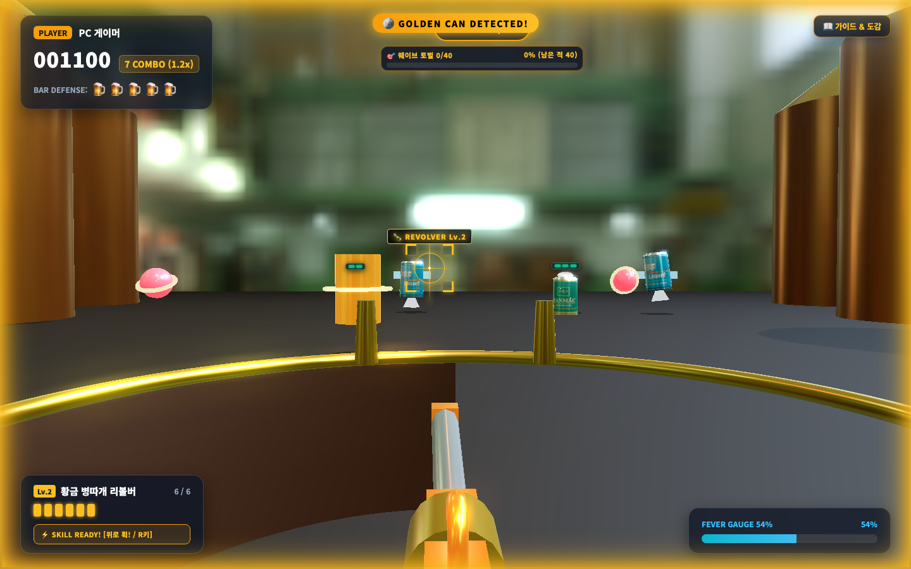
웨이브마다 1회 고속 횡단. 격추 시 +50점 · 스킬 1회 충전 · 피버 +30%. 출현 시 코인 차임과 골드 네온 테두리.
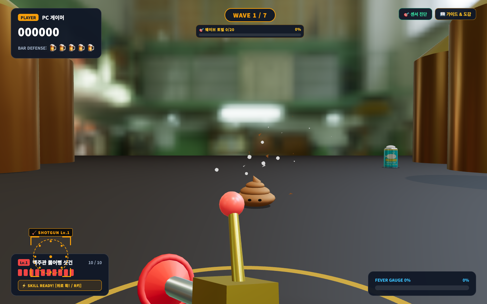
보스가 바닥을 따라 쏘는 투사체를 사격으로 격추. 못 막으면 방어선 체력(맥주잔 5개) 감소.
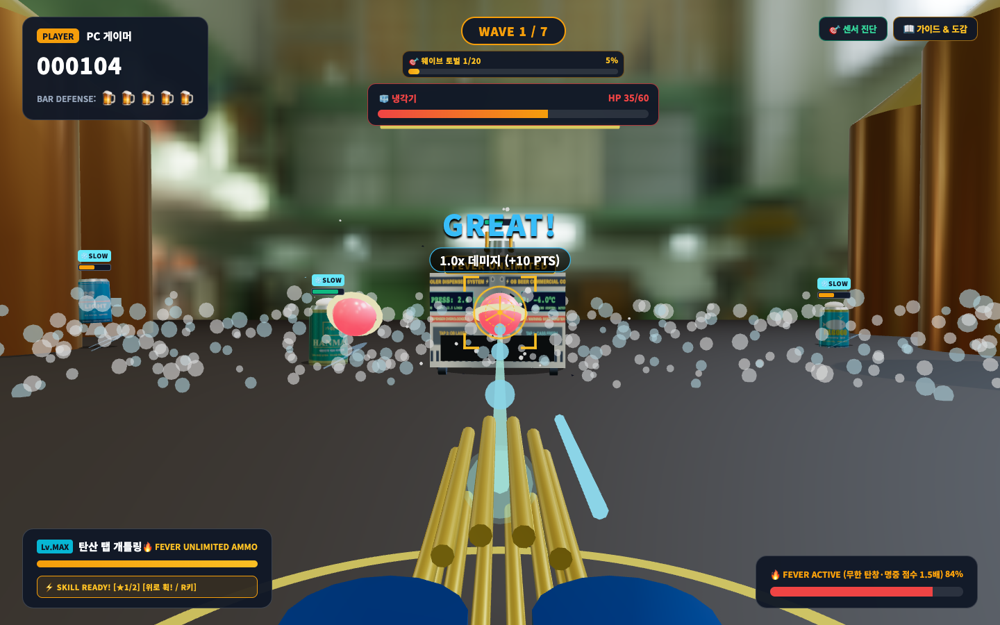
PERFECT +2%, 처치 +4%로 충전 → 더블탭 발동. 무제한 탄창 · 점수 ×1.5, 즉시 탄창 리필.
체력 99/66/33% 아래로 내려갈 때마다 부하가 하늘에서 떨어집니다. 빨리 잡아도 소환을 봅니다.
웨이브 클리어와 4·6웨이브 중간에 전장이 정지하고 보상 카드가 나옵니다.
전장이 얼어붙고 9종 중 무작위 3장이 3D 홀로그램으로 등장. 총을 쏴서 고릅니다.
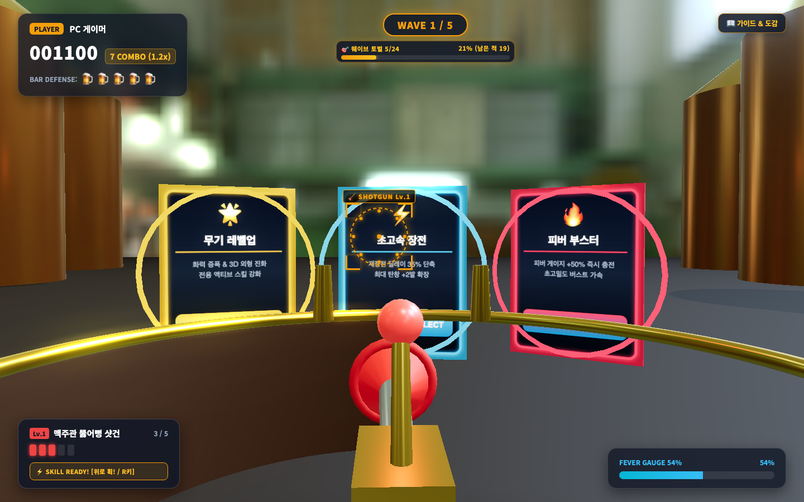
웨이브마다 기준 시간 안에 깨면 최대 700점(보스 ×2). 기준의 1.6배에서 0점까지 선형 감소.
판정 비율의 제곱 × 12,000점. 많이 쏘기보다 정확히 맞히기가 이득.
무기 레벨이 낮을수록 ×1.2 → ×1.0 배율. 성장 없이 깬 사람에게 보상.
"보스를 살려 두고 부하만 잡아 점수 쌓기"를 막기 위해, 보스가 오래 살수록 소환 간격이 8초 → 4초로 짧아지게 설계.
| 전략 (샷건) | 클리어율 | 점수 |
|---|---|---|
| 부하 먼저 처치 | 67% | 15,316 |
| 보스만 러시 | 3% | 6,696 |
| 보스 스톨 | 17% | 7,823 |
봇이 수십~수백 판을 대신 플레이해 클리어율·점수를 측정 → 수치를 표로 비교하며 사람이 결정.
44개 파일. 무기·몬스터·점수·센서·UI까지. 수정할 때마다 실행.
README·가이드의 수치가 실제 설정값과 다르면 테스트가 실패 → 문서가 낡지 않음.
gameTuning.ts 하나만 고치면 난이도 전체가 바뀜.
Playwright가 실제 게임을 실행해 문서용 화면을 다시 캡처.
점수 규칙이 바뀌면 버전을 올리고, 기존 기록은 백업 후 새 랭킹 시작.
feat 114 · docs 79 · fix 40 · perf 11. 모든 변경에 이유가 남음.
코딩 전 인터뷰로 애매함을 제거하세요.
대화는 사라져도 문서는 남습니다.
Task 하나, 테스트 하나, 커밋 하나.
피드백은 사람만 줄 수 있는 "감각".
봇과 표로 "느낌"을 "근거"로 바꾸기.
질문 → 계획 → 실행. 이 세 단계가 6일, 280커밋의 게임을 완성시켰습니다.